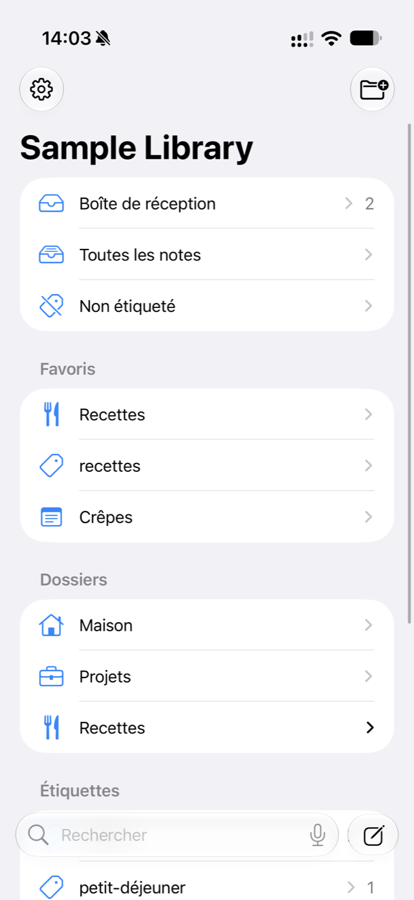

Vos notes sont des fichiers.
Shokonotes sert à les retrouver.
Une bibliothèque et un lecteur pour des notes Markdown conservées comme de simples fichiers dans un dossier de votre choix. Recherche plein texte, dossiers et étiquettes, aperçu soigné — et un petit éditeur intégré pour écrire, ou celui que vous aimez déjà.
Télécharger sur l’App StoreUn seul achat pour Mac et iPhone. Sans compte, sans abonnement.

Trouver
Une recherche qui répond pendant que vous tapez, dans toute la bibliothèque. Des dossiers imbriqués pour vos activités, des étiquettes YAML qui les traversent, des favoris et des notes épinglées.
Lire
Un aperçu GitHub Flavored Markdown soigné, avec coloration syntaxique et thèmes. La bibliothèque est strictement un lecteur : parcourir ne vous met jamais en édition par accident.
Écrire où vous voulez
Shokonotes a son propre éditeur, volontairement petit : une coloration Markdown agréable, du code coloré selon le langage, des listes et des blocs de code qui se prolongent en tapant, et un enregistrement qui n’attend aucun bouton. Ou gardez le vôtre — Typora, VS Code, BBEdit, TextEdit ou un autre : vous choisissez dans les Réglages celui qu’ouvre Entrée. Un raccourci global capture une nouvelle note dans Inbox depuis n’importe quelle app.
Sur iPhone
Ouvrez le même dossier depuis iCloud Drive. Cherchez, lisez, et capturez une idée ou une page web dans Inbox avant qu’elle ne s’échappe.
À vous, et privé
Des fichiers Markdown ordinaires, lisibles par n’importe quelle app. Pas de compte, pas de télémétrie. L’app Mac n’a aucun accès au réseau. La synchronisation est votre choix : iCloud Drive, Nextcloud, Syncthing, Git, ou rien.
